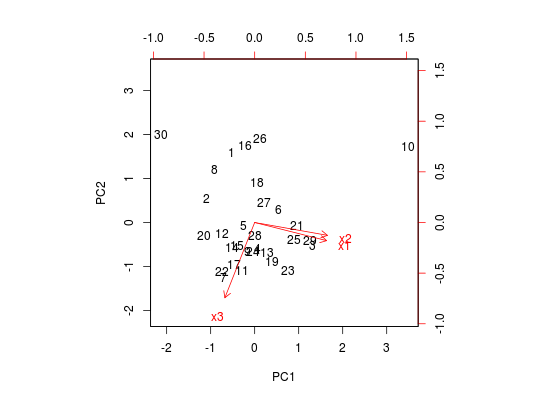

Dados provenientes de uma amostra de tamanho \(n = 30\) de uma população normal trivariada, \(X = (X_1, X_2, X_3), X \sim \textrm{Normal}_3(\underline{\mu}, \Sigma)\).
Um data.frame com 30 observações e 3 variáveis, em que
x1x2x3FERREIRA (2011), Exercício 10.11.9, pág. 487.
data(FerreiraEx10.11.9)#> Warning: data set ‘FerreiraEx10.11.9’ not foundstr(FerreiraEx10.11.9)#> 'data.frame': 30 obs. of 3 variables: #> $ x1: num 12.8 14.1 19.1 16 16 ... #> $ x2: num 29.6 26.5 33.3 31 28.9 ... #> $ x3: num 45.2 49.3 49.8 51.7 50.3 ...panel.density <- function(x, ...) { usr <- par("usr") on.exit(par(usr)) par(usr = c(usr[1:2], 0, 1.5)) par(new = TRUE) plot(density(x), xlab = "", ylab = "", main = "", lwd = 2) } # Relação entre as variáveis # (Se [X1, X2, X3] ~ Normal => X1 ~ Normal, X2 ~ Normal, X3 ~ Normal) pairs(FerreiraEx10.11.9, pch = 20, diag.panel = panel.density)# Componentes principais (comp <- prcomp(FerreiraEx10.11.9, scale = TRUE))#> Standard deviations: #> [1] 1.3151829 0.9692570 0.5751825 #> #> Rotation: #> PC1 PC2 PC3 #> x1 0.6745772 -0.2314469 0.70098350 #> x2 0.6830923 -0.1643061 -0.71160972 #> x3 -0.2798757 -0.9588722 -0.04726248screeplot(comp, type = "lines")biplot(comp, pc.biplot = TRUE)# Correlação das componentes principais com as variáveis originais cor(FerreiraEx10.11.9, comp$x)#> PC1 PC2 PC3 #> x1 0.8871924 -0.2243316 0.40319344 #> x2 0.8983913 -0.1592548 -0.40930546 #> x3 -0.3680878 -0.9293936 -0.02718455